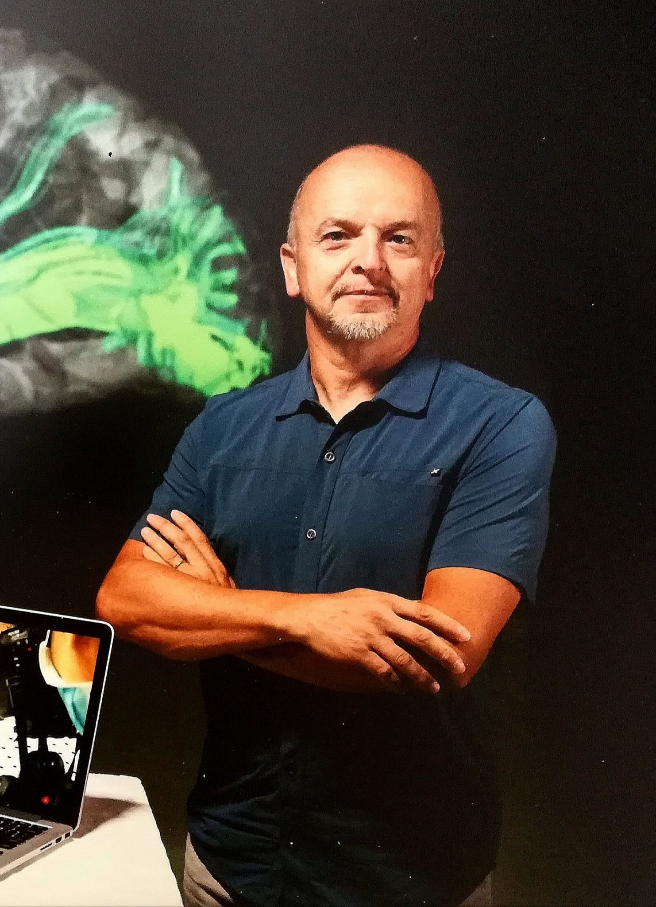
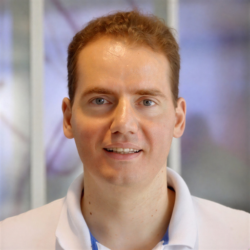
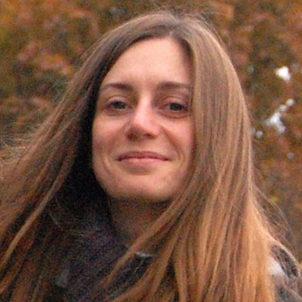
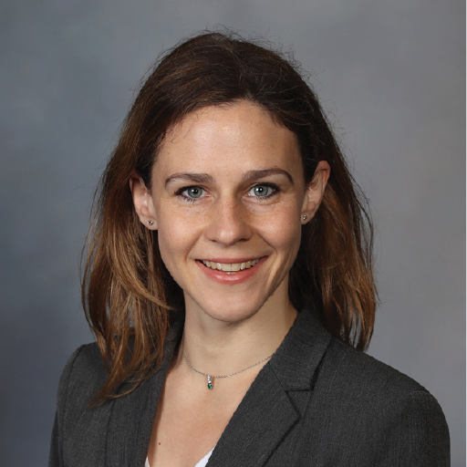
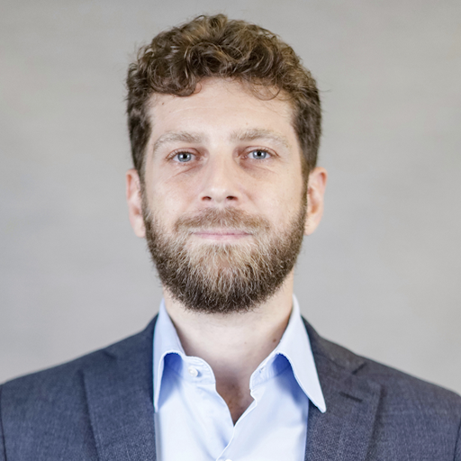
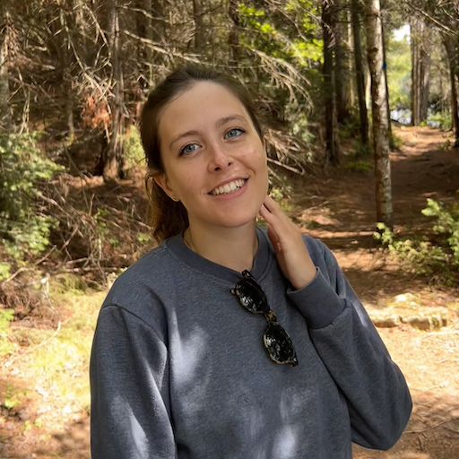
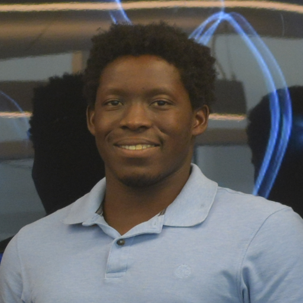

Hiromasa Takemura is a Professor at the National Institute for Physiological Sciences (NIPS) in Okazaki, Japan, and concurrently holds a professorship at SOKENDAI. He graduated from the University of Tokyo in 2007, where he also earned his Ph.D. in 2012. Following this, he completed three years of postdoctoral training at Stanford University under the mentorship of Brian Wandell. After spending six and a half years at the Center for Information and Neural Networks (CiNet), NICT, he was appointed as a full professor at NIPS in 2021. His research focuses on the structural and functional organization of the human visual system, particularly the white matter pathways connecting distant brain regions. Leveraging diffusion MRI (dMRI) and fiber tractography, Takemura has significantly advanced our understanding of the Vertical Occipital Fasciculus (VOF) and other essential pathways. His recent work spans dMRI studies on visual disorders, functional MRI of the sensory cortex, and comparative studies on visual pathways. Throughout his career, he has received numerous accolades, including the 2022 Early Career Investigator Award from the Organization for Human Brain Mapping (OHBM).
Jump to people
Organizers
Meiqi Niu is a postdoctoral research fellow at Forschungszentrum Jülich in Germany. She earned her PhD summa cum laude from RWTH Aachen University, where she was supervised by the late Professor Karl Zilles. Her early work focused on quantitative approaches to mapping neurotransmitter receptors in the primate brain. Currently, she is a member of the Receptor Group led by Professor Nicola Palomero-Gallagher. Her research sits at the cutting edge of neuroanatomy and neuroimaging, focusing on combining quantitative autoradiography and multimodal imaging to decode brain organization and the relationship between structure and function. Specifically, her research interests include: Creating fine-grained multimodal brain atlases in the macaque monkey; Investigating brain connectivity across multiple scales; Elucidating the role of receptors in shaping brain organization and mediating structure-function relationships; Identifying primate homologies and exploring brain development through cross-species comparisons.

Paolo Avesani is head of the Neuroinformatics Lab, a joint initiative of the Centre for Augmented Intelligence at the Fondazione Bruno Kessler, the Centre for Medical Sciences (CISMed), and the Centre for Mind and Brain Sciences (CIMeC) of the University of Trento, Italy. His research lies at the intersection of neuroinformatics, artificial intelligence, and computational neuroscience, with a focus on data-driven methods for understanding human brain connectivity, both structural and functional. His main contributions include the development of multimodal models of brain network maps, the design of AI-based interactive methods for the identification of relevant white matter pathways, and the creation of an open resource of 3D ex-vivo photogrammetric models of white matter dissection for neuroscience research and education. He has also contributed several studies on how machine learning methods can improve the characterization of individual brain connectivity, including work on tractogram filtering, white-matter bundle identification, neurosurgical cavity segmentation, and tractogram alignment, with applications in both research and clinical neuroscience.

Dr. Eleftherios Garyfallidis is an Associate Professor of Intelligent Systems Engineering at Indiana University's Luddy School of Informatics, Computing, and Engineering, where he leads the Garyfallidis Research Group (GRG) specializing in neuroengineering and advanced computational methods for medical imaging. A pioneer in diffusion MRI analysis, he founded and continues to spearhead Diffusion Imaging in Python (DIPY), a community-driven open-source software project dedicated to developing tools for studying structural connectivity in the brain and body through diffusion MRI. Professor Garyfallidis is renowned for his in introducing groundbreaking algorithms such as: a) QuickBundles for efficient tractography clustering, b) Streamline-based Linear Registration (SLR) for aligning tractograms, c) Patch2Self for self-supervised denoising and d) BUAN for bundle analytics and tractometry. His current work focuses on improving tractography visualization techniques, bridging computational innovation with applications in neuroscience, healthcare, and industry.
Speakers
Bio placeholder for speaker background, research focus, and contribution to the course.

Associate Professor of Physiology, Department of Medicine and Surgery, University of Parma, Italy Profile My research focuses on the anatomo-functional definition of cortical circuits involved in motor control and in cognitive motor functions. I have a background in pharmaceutical chemistry and in neuroanatomy and neurophysiology (PhD in Neuroscience), and extensive experience in the study of non-human primate neuroanatomy, gained under the supervision of Giuseppe Luppino. I investigated the areal organization of the inferior parietal, ventral premotor, and lateral prefrontal cortex based on architectonic and connectional features, and the connectivity of functionally defined cortical sectors in collaboration with electrophysiology laboratories. During my internship at RIKEN Brain Science Institute (Japan) and following collaboration with Kathleen Rockland, I worked on single axon reconstruction, cortical columnar organization, and on white matter neurons. More recently my research has focused on the definition of large-scale cortical and subcortical networks in macaques using classical anatomical and MRI-based techniques, as well as on their human counterparts from a comparative perspective.
Hiroki Oishi is an Assistant Professor at the National Institute for Physiological Sciences (NIPS) in Okazaki, Japan. He graduated from Osaka University in 2016, where he also received his Ph.D. in 2021. He then completed three years of postdoctoral training at the University of California, Berkeley, under the mentorship of Dr. Kevin Weiner. He has held his current position since 2025. His research focuses on the microstructural and functional organization of the visual system in both humans and non-human primates. He has developed a quantitative MRI–based method for microstructural mapping of the human lateral geniculate nucleus to localize its subdivisions. More recently, he examines how anatomical architecture supports topographic mapping and functional specialization across the visual pathway, including the inferior temporal cortex, in non-human primates, leveraging multimodal approaches that combine ex vivo histology and in vivo functional MRI. He received the 2021 Merit Abstract Award from the Organization for Human Brain Mapping (OHBM).
Bio placeholder for speaker background, research focus, and contribution to the course.

Dora Hermes is an Associate Professor in Biomedical Engineering at Mayo Clinic in Rochester, MN. She did her graduate training at the UMC Utrecht in The Netherlands working in the lab of Prof. Nick Ramsey. Her PhD work focused on understanding the relation between functional MRI and field potentials in the human brain. For her postdoctoral training Dora Hermes applied these techniques to better understand visual processing at Stanford University and New York University. She received a Veni fellowship from the Netherlands Organization for Scientific Research to translate this work to better understand photosensitivity and epilepsy. Dr. Hermes’ current research focuses on understanding the mesoscale signals measured in the living human brain in order to identify biomarkers of neurological disease and develop neuroprosthetics to interface with the brain. I will discuss how electrical stimulation during intracranial EEG recordings can provide insight into human neuroanatomy.
Bio placeholder for speaker background, research focus, and contribution to the course.
Hands-on
Tutors and contributors supporting the practical afternoon session.
Stephanie Forkel is a Principal Investigator for Clinical Neuroanatomy at the Donders Institute, an Associate Professor for Psycholinguistics at Radboud University, and a Senior Research Associate at the Max Planck Institute in the Netherlands. She leads the Language and Communication Theme, uniting researchers across institutes to understand the neuroanatomical foundations of language from genes to behaviour. In 2023, Stephanie won the prestigious Elizabeth Warrington Prize for her work in neuroanatomy and cognition and served as the OHBM 2023 Programme Chair. Her research investigates neurovariability and its impact on cognition across brain states in health and disease. In this course, she translates these insights into practical neuroanatomical knowledge for language neuroscience.

Alberto Cacciola, MD, is an Associate Professor of Human Anatomy at Humanitas University, Milan, Italy. He gained international research experience at the BIOTEC Center (Technische Universität Dresden, Germany) and at Tsinghua University (Beijing, China), where he acquired advanced expertise in network neuroscience, brain connectivity modeling, and graph-theoretical analysis of neuroimaging data. In 2021, he founded and directed until 2025 the Brain Mapping Lab at the University of Messina (Italy) dedicated to advancing the understanding of brain structure and function through computational neuroanatomy. In 2019, he received the Best Young Researcher Under 40 award from the Italian Society of Anatomy and Histology for his work in neuroanatomy. His research revolves around neuroimaging and connectomics in the human brain. His main goals include advancing the understanding of cortico-subcortical interactions, developing novel approaches for subcortical segmentations and connectivity analysis, and identifying neuroimaging-based biomarkers for brain disorders and brain tumors.

Laura Vavassori is a postdoctoral researcher at the Multimodal Imaging and Connectome Analysis (MICA) Lab at the Montreal Neurological Institute, McGill University, Canada. She completed her PhD at the Center for Mind/Brain Sciences (CIMeC) of the University of Trento, Italy, where she worked at the interface of clinical and fundamental neuroscience. Her doctoral research focused on improving the anatomical reliability of diffusion MRI-based tractography by integrating in vivo imaging with ex vivo dissection, contributing to more anatomically accurate reconstructions of human white matter connections. She is interested in understanding how cognitive functions emerge from interactions between distributed cortical regions mediated by white matter pathways, and how these structure-function relationships are altered in neurological conditions. Laura is also actively engaged in advancing neuroanatomy education by developing 3D-printed didactic models of white matter connections and contributing to the design and validation of an interactive tool for tractography segmentation, enabling hands-on learning of brain connectivity.
Ludovico Coletta is a postdoctoral researcher at the Neuroinformatics Laboratory (NiLab) of Fondazione Bruno Kessler. He obtained his MSc in Neuropsychology and Neuroinformatics from the University of Zürich, Switzerland, and his PhD at the Italian Institute of Technology, where he trained under the supervision of Alessandro Gozzi. His research sits at the intersection of connectomics, artificial intelligence, and systems neuroscience, with a particular interest in understanding brain connectivity across scales. By integrating computational modelling, neuroimaging, and network neuroscience, he investigates how brain networks give rise to cognition and behavior, and how these systems are disrupted in neurological conditions. His work spans both animal and human neuroscience, contributing to a more comprehensive view of brain organization. He is especially interested in bridging advanced computational methods with biologically grounded questions about how the brain is structured and how it functions. More broadly, he aims to develop data-driven frameworks that can capture the complexity of brain function and dysfunction, advancing both fundamental neuroscience and translational research.

Serge Koudoro is a Research Software Engineer at Indiana University and an expert in image processing and registration. As the Lead Maintainer and Release Manager for DIPY and FURY, he manages the code and tools used by scientists worldwide to process and visualize brain data. He is a key leader in the open-source community, having mentored multiple students/post-docs/professors and co-organized many international workshops. His work focuses on making complex medical imaging software easier for everyone to use.
Bio placeholder for hands-on contributor background, technical support role, and course contribution.
Contact
For organizer contact information, please use the official OHBM course communication channels.